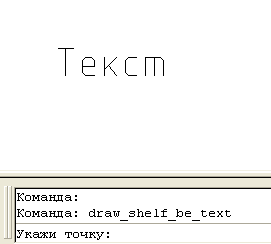

Команда:edit_add_special_symbol_to_text
Команда:edit_add_special_symbol_to_textРисует полку к выбраному тексту
Команда:edit_add_special_symbol_to_text
 Укажи точку:
Укажи точку:
 Указывает точку на которую будет указывать полка
Указывает точку на которую будет указывать полка
Выбери текст:
Указывает объект типа текст к которому рисуется полка.
Запрос точки и текста происходит циклично, пустой ввод точки выход из программы.
Положение "уголка" полки быбирается автоматическа как ближнее у точке указания полки.
Инструмент некоторое время усиленно использовался пока не стало очевидно полное превосходство мультивыносок.
Пример работы программы
